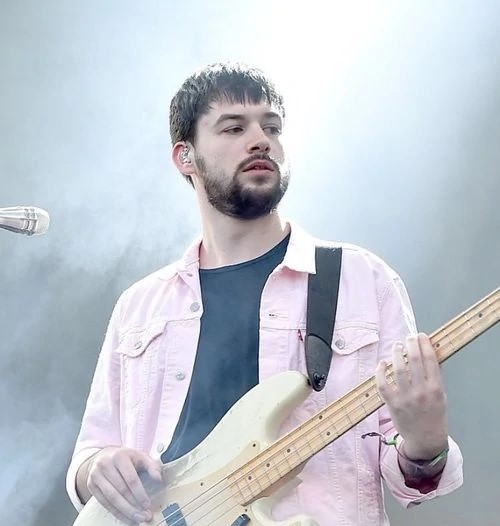

Our Members
Members of The 1975.
-

Matthew Healy
Matthew "Matty" Healy (born in London, England on April 8, 1989) is an English singer. He is the lead singer and lead guitarist for the rock band The 1975.
-
Adam Hann
Adam Hann is the lead guitarist for the indie rock band The 1975 whose self-titled debut album topped the UK Albums Chart.
-

Ross MacDonald
Ross MacDonald is a member of the English indie rock group The 1975 who released four EPs before finally releasing a full length debut album in September of 2013.
-
George Bedford Daniel
George Bedford Daniel is the drummer and member of the indie rock band The 1975 whose self-titled debut album peaked atop the UK Albums Chart in September of 2013, The 1975.